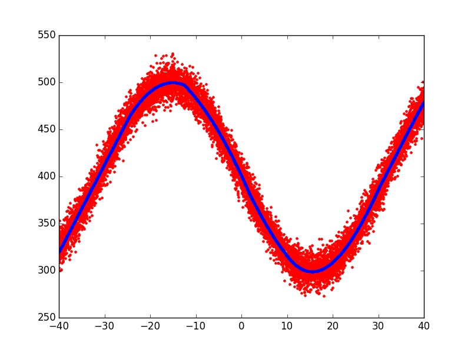

Plotting simple sine function¶
A simple example plotting a fit of the sine function.
Script output:
Forward Pass
----------------------------------------------------------------------
iter parent var knot mse terms gcv rsq grsq
----------------------------------------------------------------------
0 - - - 4449.337778 1 4450.228 0.000 -0.000
1 0 6 8011 2989.250294 3 2994.638 0.328 0.327
2 1 6 3811 158.477297 5 159.017 0.964 0.964
3 0 6 6511 129.369292 7 130.019 0.971 0.971
4 3 6 1211 109.489114 9 110.215 0.975 0.975
5 5 6 4711 103.378143 11 104.231 0.977 0.977
6 9 6 3811 101.655699 13 102.659 0.977 0.977
----------------------------------------------------------------------
Stopping Condition 2: Improvement below threshold
Pruning Pass
----------------------------------------------------
iter bf terms mse gcv rsq grsq
----------------------------------------------------
0 - 13 101.66 102.659 0.977 0.977
1 2 12 101.66 102.577 0.977 0.977
2 12 11 101.84 102.676 0.977 0.977
3 3 10 103.10 103.865 0.977 0.977
4 7 9 104.23 104.921 0.977 0.976
5 10 8 104.93 105.543 0.976 0.976
6 11 7 106.56 107.091 0.976 0.976
7 5 6 115.62 116.108 0.974 0.974
8 8 5 138.76 139.236 0.969 0.969
9 4 4 251.66 252.312 0.943 0.943
10 6 3 3026.23 3031.688 0.320 0.319
11 9 2 3872.06 3875.935 0.130 0.129
12 1 1 4449.34 4450.228 -0.000 -0.000
----------------------------------------------------
Selected iteration: 1
Earth Model
----------------------------------------------------------------
Basis Function Pruned Coefficient
----------------------------------------------------------------
(Intercept) No 576.111
h(x6+24.5573) No -15.37
h(-24.5573-x6) Yes None
h(x6-9.30493)*h(x6+24.5573) No 1.88872
h(9.30493-x6)*h(x6+24.5573) No 0.403057
h(x6+12.5446) No 9.10831
h(-12.5446-x6) No -9.33602
h(x6-30.3812)*h(x6-9.30493)*h(x6+24.5573) No 0.0849127
h(30.3812-x6)*h(x6-9.30493)*h(x6+24.5573) No -0.0862001
h(x6-1.85328)*h(x6+12.5446) No 0.403693
h(1.85328-x6)*h(x6+12.5446) No -0.183637
h(x6-9.30493)*h(x6-1.85328)*h(x6+12.5446) No -0.0935145
h(9.30493-x6)*h(x6-1.85328)*h(x6+12.5446) No -0.0123002
----------------------------------------------------------------
MSE: 101.6557, GCV: 102.5768, RSQ: 0.9772, GRSQ: 0.9770
Python source code: plot_sine_wave.py
import numpy
import matplotlib.pyplot as plt
from pyearth import Earth
# Create some fake data
numpy.random.seed(2)
m = 10000
n = 10
X = 80 * numpy.random.uniform(size=(m, n)) - 40
y = 100 * \
numpy.abs(numpy.sin((X[:, 6]) / 10) - 4.0) + \
10 * numpy.random.normal(size=m)
# Fit an Earth model
model = Earth(max_degree=3, minspan_alpha=.5)
model.fit(X, y)
# Print the model
print(model.trace())
print(model.summary())
# Plot the model
y_hat = model.predict(X)
plt.plot(X[:, 6], y, 'r.')
plt.plot(X[:, 6], y_hat, 'b.')
plt.show()
Total running time of the example: 4.88 seconds ( 0 minutes 4.88 seconds)